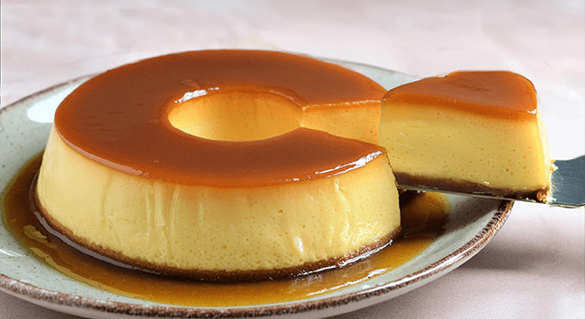

O que é o pudim?
O pudim de leite condensado é uma sobremesa cremosa feita com ovos, leite condensado e leite, assada em banho-maria e servida com calda de caramelo. Com textura suave e sabor adocicado, é uma das sobremesas mais populares e afetivas da culinária brasileira.
História
O pudim tem origem na culinária europeia, especialmente em Portugal e França, onde sobremesas à base de ovos e leite já eram tradicionais desde a Idade Média.
Com a chegada dos portugueses ao Brasil, a receita foi trazida e adaptada ao longo dos séculos. A versão com leite condensado — ingrediente que chegou ao Brasil no século XIX — tornou o pudim ainda mais cremoso e doce, conquistando definitivamente o paladar brasileiro.
Hoje, o pudim de leite condensado é presença garantida em festas de aniversário, almoços de domingo e padarias de todo o país.
Curiosidades
- O pudim leva apenas 3 ingredientes básicos: ovos, leite condensado e leite.
- A calda de caramelo é feita com açúcar puro derretido — sem água.
- O buraco no meio não é só estético: ajuda a assar de forma mais uniforme.
- Existe uma versão com queijo coalho muito popular no Nordeste do Brasil.
- O pudim é primo do crème brûlée francês e do flan espanhol.
Receita clássica
Ingredientes:
- 1 lata de leite condensado
- 2 medidas (da lata) de leite integral
- 3 ovos inteiros
- 1 xícara de açúcar (para a calda)
Modo de preparo:
- Derreta o açúcar em fogo médio até caramelizar e despeje na forma.
- Bata no liquidificador o leite condensado, o leite e os ovos por 3 minutos.
- Despeje na forma com a calda e leve ao forno em banho-maria a 180°C por 1h20.
- Deixe esfriar, leve à geladeira por 4 horas e desenforme.
Compartilhe
Gostou? Manda pra galera! 🍮